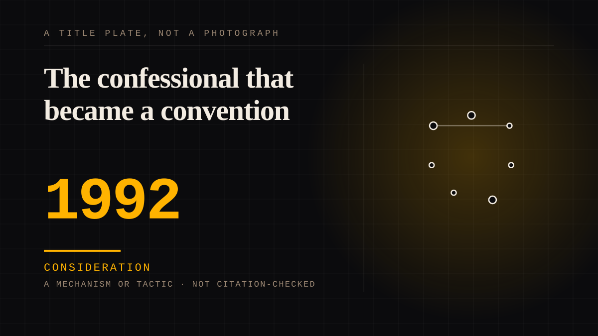

A mechanism or tactic · 1992 · Reality television
The confessional that became a convention
In 1992 MTV's The Real World gave reality television its least-questioned convention: a person alone in a room, speaking to a camera about what everyone just saw. The confessional was adopted by Survivor, Big Brother and the Housewives, and it endures because it is an interview dressed as a private thought, in a public space everyone pretends is private.

A soap opera that could not afford writers invented a confidante instead. The Real World began as MTV's attempt at a scripted show for a younger audience; without a writers' budget, the plan became gathering seven strangers in one house and editing the resulting footage. The series premiered on 21 May 1992, and from the start its stock included the confessional - alone time in which a cast member could 'speak directly to a camera about the happenings in the house'. One reference account calls the confessional 'a Real World invention that dozens of other reality shows, including Survivor, Boot Camp, Making of the Band, Big Brother and Road Rules, have adopted'.
The confession is a manufactured private address.
The producers interviewed cast members on a schedule - in the first season in hallways, stairways, on a roof and once in a bathtub - and trained them to look straight into the lens and tell the story in the present tense, so the audio could work as narration. Later seasons installed a closet with a sofa and a fixed camera; a producer's description, recorded in the press, is the sharpest sentence on the format: 'a public space that everyone pretended was a private space'. The viewer is not a confidante; the viewer is the intended addressee of a scene the crew staged and the editors selected.
The booth is infrastructure for somebody else's attachment.
The confessional is the compact through which a reality participant becomes a figure you can feel alone with: it manufactures the feeling of being spoken to directly - 'this person is talking directly to me', as one account of the format puts it - and the far side of that conversation is edited by people the viewer never meets. The competing placement, the presenter, fails because the speaker is not an employee assigned the second person on someone else's schedule; the machinery between viewer and figure - who is chosen, when they speak, what the editor keeps - is the platform's property, which is the shelf this entry is filed on. The booth's later children on this site are the reality celebrity and the live stream that inherits the address.
Consideration. The part where somebody stops and thinks. The research, the diagnosis, the ethics, the lawsuits, the regulators. Roughly fifty years of arguing with itself about whether this is a relationship.
Where it sits
1950 1950-1999 · 1992 1999
Provenance · 4 source record(s)
- unverifiedThe spring-1992 origin of the format, the confessionals allowing cast members 'in solitude, to directly address a video camera in a manner similar to a video diary', and the claim that the confessional is 'a Real World invention' adopted by Survivor, Boot Camp, Making of the Band, Big Brother and Road Rules. Read through a search index rather than fetched, so the record is unverified: a reader can open this page, this agent did not.The Encyclopedia of Television, "Real World, The" (tvencyclopedia.org) ↗
- unverifiedThe confessional as a defining trope: intimate interviews repurposed as narration, the present-tense looking-into-the-lens training, the interview locations of the first season, and the later closet-with-camera set-up described as 'a public space that everyone pretended was a private space'. Read through a search index rather than fetched, so the record is unverified: a reader can open this page, this agent did not.The New Yorker, "How 'The Real World' Created Modern Reality TV" (E. Nussbaum, 2024) ↗
- unverifiedThe confessional as the moment reality television became a cohesive medium, its function as cast 'thought bubbles', the breaking of the fourth wall, and the direct-address effect described as 'this person is talking directly to me'. Read through a search index rather than fetched, so the record is unverified: a reader can open this page, this agent did not.The Cut, "How the Reality TV Confessional Shaped Our Digital Lives" (L. Staples, 2022) ↗
- unverifiedThe first-season facts: seven cast members in the Soho loft from February to May 1992, thirteen episodes, and the premiere on 21 May 1992. Read through a search index rather than fetched, so the record is unverified: a reader can open this page, this agent did not.New York Post, "How 'The Real World: New York' found its cast - and its success" (C. Hirsch, 2021) ↗
Connected · 2 out, 1 in
It sits in